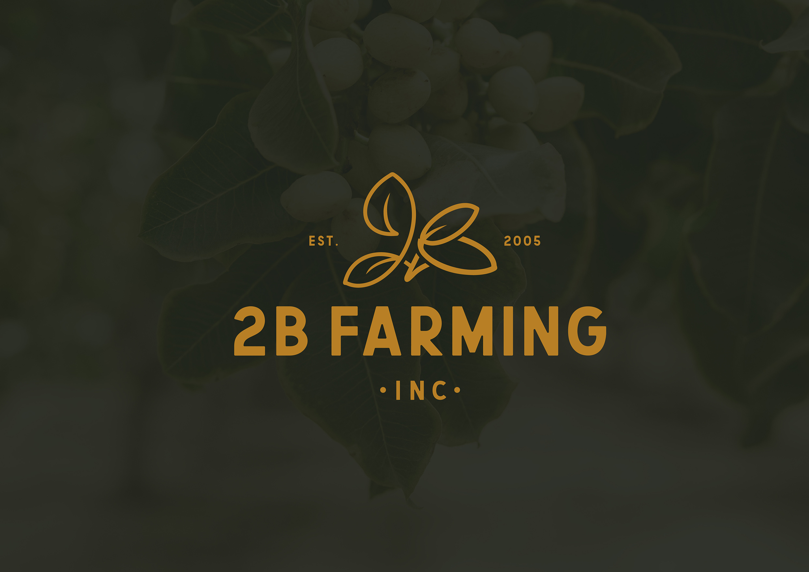
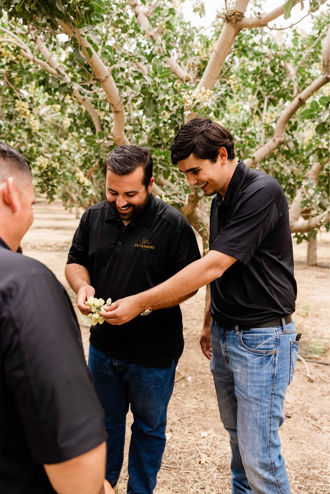
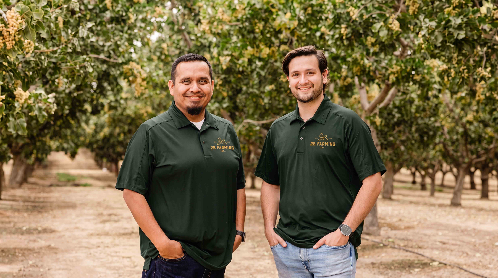
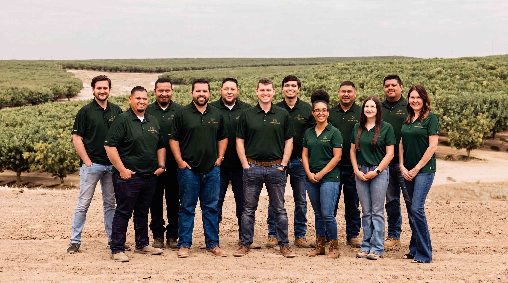
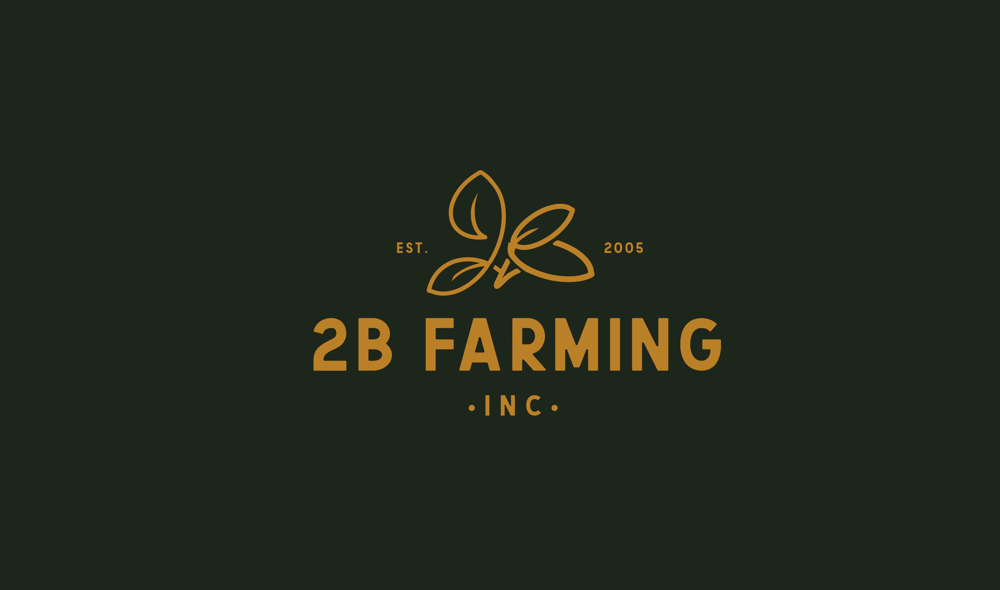
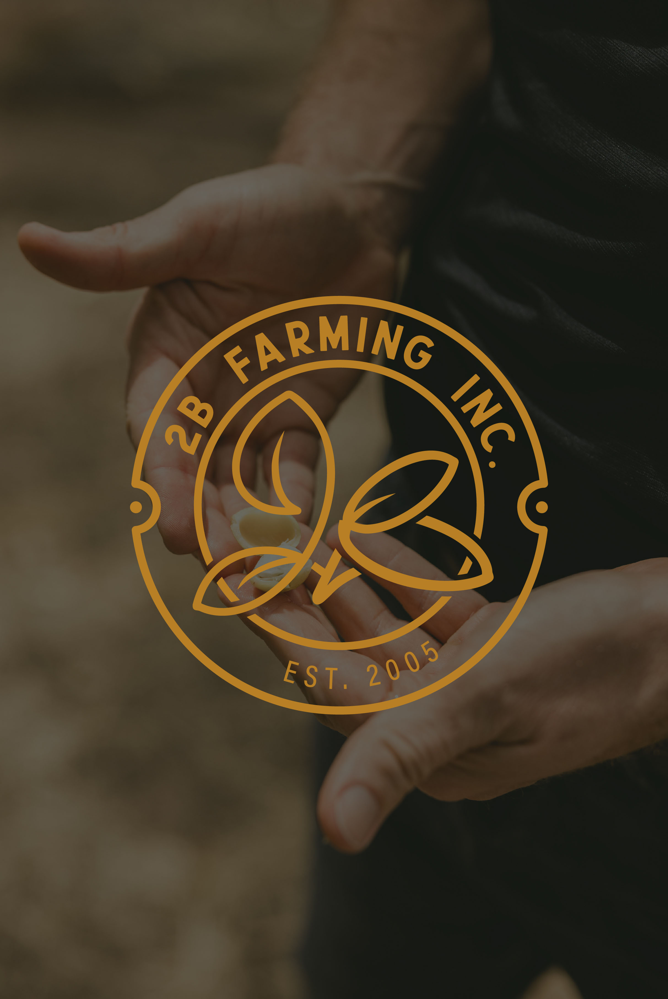
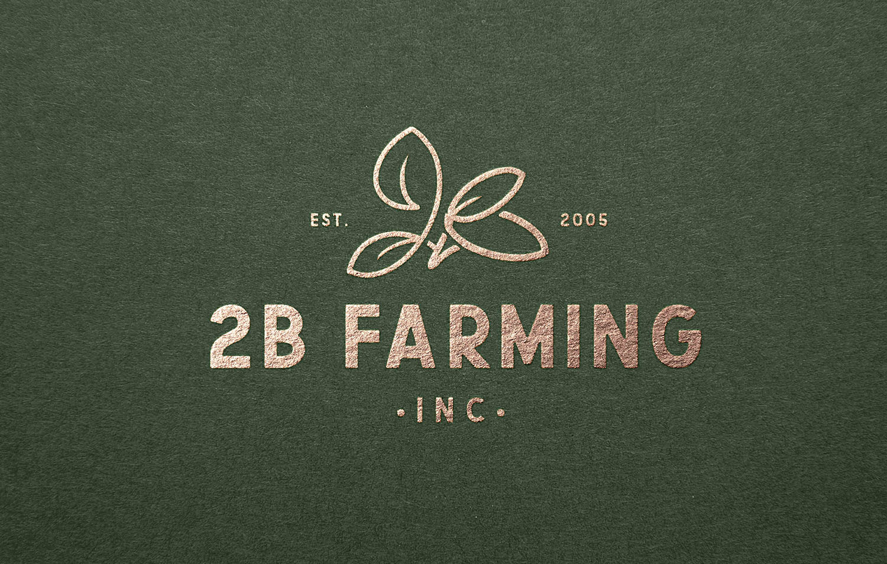
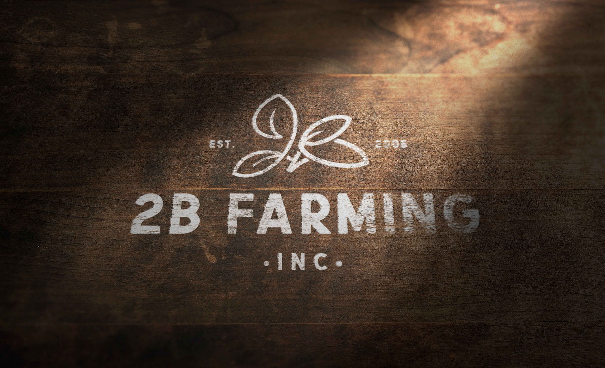
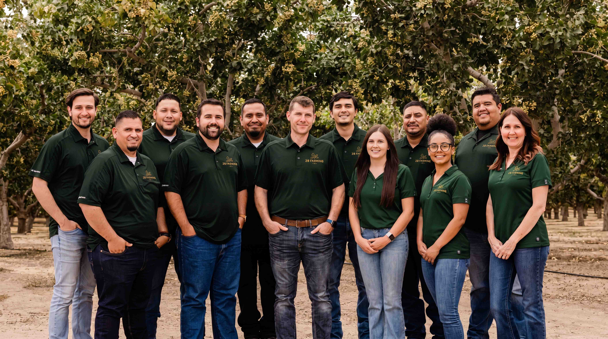

rooted in the land, built to last
2B Farming is a modern agricultural company specializing in farm management, cultivation, pest control, administration services, and pistachio harvesting throughout Central California. While the business itself was multifaceted, the challenge was deceptively simple: create a visual identity capable of representing all of it through a single memorable mark.
2B Farming approached us as they were looking to establish a stronger identity for a growing agricultural operation. On paper, they do a lot, farm management, cultivation, spraying, pest control, harvesting, administration. Trying to distill all of that into a logo was the immediate challenge.
At the same time, they wanted to position themselves as a modern agriculture company without losing the human element that makes farming feel personal. That balance became the foundation of the project.


The challenge was figuring out how much meaning could live inside a single symbol without becoming overwhelming visually. The logo needed to reference:
And somehow do all of that without looking like an abhorrent piece of trash. That’s always the danger with symbolic logo design, you start with good intentions and suddenly you’ve created a visual Frankenstein. The challenge was finding a solution that felt effortless even though it carried multiple layers beneath the surface.

We wanted the brand to feel modern, but not cold. Handcrafted, but not rustic. Simple, but not generic. I wasn’t interested in creating a slick tech-company logo and dropping it onto a farming business. The human side of agriculture felt important. The relationship to the land felt important.
So I started sketching. A lot. Hundreds of sketches, different shapes, arrangements, combinations of letters, numbers, leaves, and agricultural references. Most of them failed. Then the right shape started to emerge. Once I found the basic form, the real work began: refining it, simplifying it, refining it again. The goal was to make something that looked obvious in hindsight while hiding a surprising amount of thought beneath the surface.


I created the logo mark from scratch and developed the broader visual identity surrounding it. That included:
The logo became the foundation for everything that followed.

The biggest sign came years later when the company brought us back. Not because the original work failed, because they loved it. We were eventually rehired to help evolve their branding further, which is always one of the most rewarding compliments a client can give.
The other proof came from seeing how enthusiastically the team embraced the identity. Employees were wearing the logo on hats, jackets, uniforms, and merchandise. I remember seeing it embroidered onto really nice Carhartt jackets and hearing stories about people wanting specific pieces because they genuinely liked how the brand looked. That’s when a logo starts doing more than identifying a company. It becomes something people want to associate themselves with.


2B Farming is one of my favorite examples of symbolic problem solving. A lot of logo projects focus on aesthetics. This one focused on meaning.
What I love most about it is that people don’t necessarily need to see every layer built into the mark. The logo works whether they discover those details or not. But if they spend time with it, there’s more to uncover. To me, that’s the sweet spot. The strongest identities don’t reveal everything at once. They invite curiosity.
The best logos aren’t decorations. They’re containers for ideas.
